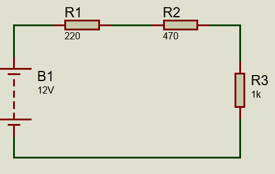
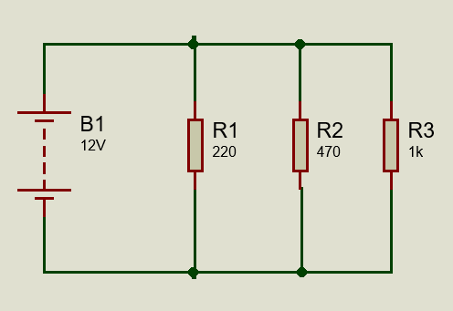
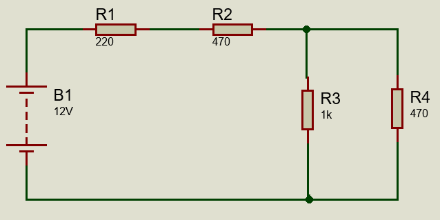
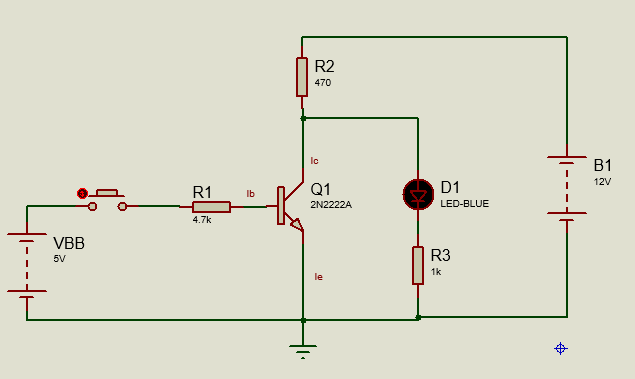
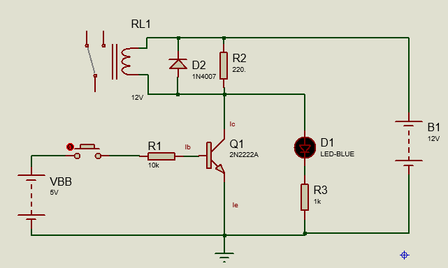

Guía de Laboratorio
Ley de Ohm en Circuitos Resistivos y Transistores NPN
Circuitos en Serie, Paralelo y Mixto
Transistores NPN en Conmutación
Fuente de Alimentación: 12V DC
Señal de Control: 5V (Vbb)
Circuitos en Serie, Paralelo y Mixto
Transistores NPN en Conmutación
Fuente de Alimentación: 12V DC
Señal de Control: 5V (Vbb)
Verificar experimentalmente la Ley de Ohm y las leyes de Kirchhoff en circuitos resistivos en serie, paralelo y mixto, alimentados con fuente de voltaje continuo de 12V, así como comprender el funcionamiento de transistores NPN en configuración de conmutación.
Conectar tres resistencias en serie alimentadas con 12V DC:

Figura 1: Circuito resistivo en serie con fuente de 12V
| Parámetro | Valor Teórico | Valor Medido | % Error |
|---|---|---|---|
| Resistencia Total (Rt) | 1690Ω | ||
| Corriente Total (It) | 7.1 mA | ||
| Voltaje en R1 | 1.56V | ||
| Voltaje en R2 | 3.34V | ||
| Voltaje en R3 | 7.1V |
Conectar tres resistencias en paralelo alimentadas con 12V DC:

Figura 2: Circuito resistivo en paralelo con fuente de 12V
| Parámetro | Valor Teórico | Valor Medido | % Error |
|---|---|---|---|
| Resistencia Total (Rt) | 277Ω | ||
| Corriente Total (It) | 43.3 mA | ||
| Corriente en R1 | 25.5 mA | ||
| Corriente en R2 | 12 mA | ||
| Corriente en R3 | 5.45 mA |
Combinación de resistencias en serie y paralelo con fuente de 12V DC:

Figura 3: Circuito resistivo mixto con fuente de 12V
| Parámetro | Valor Teórico | Valor Medido | % Error |
|---|---|---|---|
| Resistencia Total (Rt) | ~1005Ω | ||
| Corriente Total (It) | ~11.9 mA | ||
| Voltaje en R1 | 2.62V | ||
| Voltaje en R2 y R3 | 3.75V | ||
| Voltaje en R4 | 5.59V |
Transistor NPN como interruptor controlado por la base:

Figura 4: Circuito de conmutación con transistor NPN (Configuración 1)
| Parámetro | Condición | Valor Medido |
|---|---|---|
| Vbe (Base-Emisor) | Transistor ON | |
| Vce (Colector-Emisor) | Transistor ON | |
| Vce (Colector-Emisor) | Transistor OFF | |
| Ib (Corriente de Base) | Transistor ON | |
| Ic (Corriente de Colector) | Transistor ON | |
| β (Ganancia) | Ic/Ib |
Transistor NPN con carga inductiva o diodo de protección:

Figura 5: Circuito de conmutación con transistor NPN (Configuración 2)